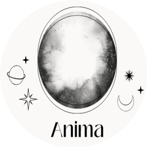

8月4日 GitHub 日榜
4G
显存
跑
700亿
参数大模型
| 00| 25| 50| 75| 99
#01
本地大模型推理
低配显卡跑大模型
lyogavin / airllm

4G老显卡跑700亿参数 · 分层流式加载
4G显存
逐层加载
本地推理
老显卡也能跑超大模型
#02
本地推理引擎
本地跑大模型
antirez / ds4
Redis作者用C写的推理引擎 · 三平台通吃
C语言引擎
三平台
开源老兵
Redis作者又整活了
#03
AI语音工作室
自己做语音克隆
jamiepine / voicebox

开源AI语音工作室 · 克隆听写创作一条龙
声音克隆
语音听写
数据本地
收费能力开源免费用
100m80m60m40m20m
#04
PDF解析库
给开发者解析PDF
firecrawl / pdf-inspector

Rust写的PDF解析 · 智能识别扫描件与文本件
Rust极速
智能分类
自动路由
一天涨近一千七百星
#05
终端AI编程
终端里AI编程
esengine / DeepSeek-Reasonix

围绕缓存稳定性的编程agent · 常驻后台不崩
常驻后台
缓存稳定
终端编程
挂着不崩的编程搭档
你最想上手哪个？
kaneo 还在涨 · 自己部署不按人头收费
关注 GitHub星探 · 下期见